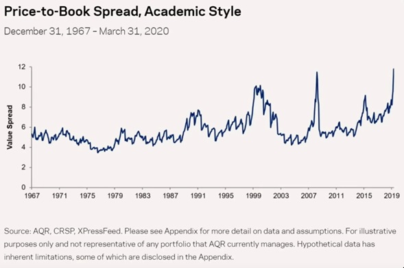

פורסם בתאריך 7.10.2020
התכנים בפוסט זה, כמו כל שאר התכנים בבלוג, הינם תכנים לימודיים במהותם, הם אינם מהווים ייעוץ או המלצה לביצוע פעולה בנייר ערך, ואין לראות בהם תחליף לייעוץ השקעות ו/או ייעוץ פנסיוני המתחשב בצרכיו הייחודיים של כל אדם.
משקיעים ישראלים רבים בוחרים להשקיע אך ורק במדד ה-S&P 500 הפופולרי, המייצג את 500 החברות הגדולות בארה"ב. הסיבות המרכזיות להתמקדות במדד הזה, הן בגלל הפיזור הרחב יחסית שלו, וכן בגלל הביצועים היפים של השוק האמריקאי בהשוואה לשאר העולם בעשור האחרון בכלל, ובתקופת הקורונה בפרט.

בעשור האחרון השיג המדד תשואה מצטברת של יותר מ-250%, כלומר תשואה שנתית ממוצעת נומינלית של כ-11.6% לשנה. גם בתקופת הקורונה המדד השיג תוצאות נאות: הוא תיקן במהירות את הירידות, חזר בחזרה לרמות השיא של חודש פברואר, ואף עקף אותן, כאילו שהמגיפה נעלמה מהעולם. כתוצאה מהפופולריות של המדד בציבור הישראלי, קמו בשנים האחרונות מסלולים מחקי S&P500 בקרנות השתלמות וקופות הגמל של מס' גופים, ולאחרונה גם בקרן הפנסיה של הלמן אלדובי, ובקרוב גם בזו של מיטב דש.
חלק מהמשקיעים בוחרים להשקיע, בנוסף ל-S&P 500, גם במדד הנאסד"ק שכולל בעיקר מניות מסקטור הטכנולוגיה (וחופף במידה רבה ל-S&P 500). הסיבה המרכזית היא שביצועי סקטור הטכנולוגיה בשנים האחרונות היו יוצאים מהכלל, טובים משמעותית אף מאלה של ה-S&P 500. בעשור האחרון השיג המדד תשואה מצטברת של כ-550%(!), כלומר תשואה שנתית ממוצעת נומינלית של כ-20.5% לשנה, יותר מכפול מה-S&P 500. בתקופת הקורונה, המדד תיקן במהירות את הירידות, חזר בחזרה לרמות השיא של חודש פברואר, ואף עקף אותן בלא פחות מ-16%, תוך ניצול העובדה שרבות מחברות הטכנולוגיות הרוויחו יפה בתקופת הקורונה כתוצאה מהמעבר לעבודה ולימודים מהבית, ומדיגיטציה של תהליכים רבים.

סיבה נוספת שייתכן ותדלקה את הביקוש להשקעה ב-S&P 500 ובנאסד"ק היא כניסת הקרנות האיריות של בלאקרוק למסחר בישראל, כאשר שתיים מהקרנות הבולטות ביותר עוקבות אחרי שני המדדים הללו (שתי הראשונות בטבלה כאן).
חלק מסוים מהמשקיעים בוחרים להיות אפילו עוד יותר ספציפיים ולהשקיע ישירות במניות של 5 ענקיות הטכנולוגיה (מניות ה-Big Tech), שהן גם 5 המניות בעלות שווי השוק הגבוה ביותר בארה"ב, שכוללות את (ממוינות לפי שווי שוק): Apple, Microsoft, Amazon, Google, Facebook. חברות אלה תופסות נפח משמעותי ביותר ממדד הנאסד"ק (45%), וגם נפח לא מבוטל מה-S&P 500 הרחב יותר (22%). אותן 5 ענקיות הטכנולוגיה הובילו את המדדים בעשור האחרון, ובתקופת הקורונה כבר פעלו בניתוק מוחלט משאר השוק. אם נפרק את ה-S&P 500 ל"מדד 5 הגדולות" ול-"S&P 495" (כל היתר), נראה שהגדולות השיגו תשואה פנומנלית של 50% מתחילת השנה ועד סוף יולי, בניגוד לתשואה שלילית של 11.4%- לכל היתר.

אם נוסיף ל-5 הגורילות הטכנולוגיות גם את הכוכבת החדשה, טסלה (המניה השישית בגודלה בנאסד"ק), הביצועים ישתפרו אפילו יותר, ולאחרונה אפילו עלו רעיונות ברחבי הפייסבוק והבלוגים בסגנון של "בשביל מה בכלל לפזר במדדים, אם אפשר פשוט להשקיע במניות המוצלחות ביותר"?
אז למה שלא נשקיע רק ב-S&P 500 / רק בנאסד"ק / רק ב-5 ענקיות הטכנולוגיה?
בקצרה: סקטורים/סגמנטים של השוק שמובילים על פני כלל השוק (וכלל העולם) בתקופה מסוימת, לרוב מציגים ביצועי חסר ביחס לכלל השוק בתקופה העוקבת.
וביתר פירוט, חמש מניות הטכנולוגיה הגדולות הן מניות מסוג Large Cap Growth. למה Large Cap? זה די ברור – הן בעלות שווי השוק הגדול ביותר, ובגלל שהמדדים בנויים לפי שווי שוק, הן תופסות נפח כ"כ נכבד מתוך המדדים. ולמה Growth? נהוג לחלק מניות לקבוצות לא רק לפי גודל (מניות גדולות/בינוניות/קטנות), אלא גם בחלוקה בין מניות ערך למניות צמיחה.
מניות ערך הן מניות שמחירן בבורסה נמוך ביחס לרווחיותן בספרים (כלומר מניות זולות), ומניות צמיחה הן מניות שהציגו ביצועי צמיחה גבוהים ולכן צופים להן ביצועי צמיחה גבוהים גם בעתיד. למרות שמניות צמיחה הן לא בדיוק ההיפך הגמור ממניות ערך, בגלל הציפיות לצמיחה גבוהה גם בעתיד, מניות הצמיחה מאופיינות במחירים גבוהים בבורסה ביחס לרווחיותן בספרים. (הרווחיות נמדדת באמצעות יחסי price/book, price/earnings ואחרים).
אז הבנו שבאופן כללי המחירים של מניות הצמיחה ביחס לרווחיותן בספרים גבוהה. אבל האם היא גבוהה באופן חריג בתקופה זו? בראייה היסטורית, בפירוש כן! המחירים הנוכחיים של מניות הצמיחה הגדולות כ"כ גבוהים ביחס לרווחיותן, שהיחס הזה ממש דומה לזה שהיה בתחילת שנת 2000 (לפני התפוצצות בועת הדוט-קום), אשר אחריה הגיע עשור של תשואה שלילית למניות הצמיחה הגדולות.
כדי לבחון את הציפיות לביצועי מניות הצמיחה הגדולות, ובפרט ענקיות הטכנולוגיה, בשנים הקרובות, נצטרך להבין קודם מה מגדיר מחירי מניות בבורסה. מחיר המניה נגזר מהצפי לרווחיות בעתיד (שזה מדד לא מדויק, אך ניתן לאמוד אותו ביחס לרווחיות האמיתית בשנים האחרונות וציפיות מסוימות לעתיד), וכן מהרווחיות הבלתי צפויה (אם חברה מדווחת על רווחים גבוהים מהצפי, מחירה לרוב יזנק).
המחירים הנוכחיים של מניות הצמיחה הגדולות משקפים ציפיות להמשך רווחיות עתידית גבוהה. חברות הצמיחה אכן יכולות להמשיך ברווחיות גבוהה גם בעתיד, למרות שקשה לשמור על רווחיות גבוהה מאוד לטווח הארוך, וקיים סיכוי סביר שהרווחיות תפחת (אפילו אם תישאר גבוהה). אבל זו לא כל התמונה, כי המחירים הנוכחיים ביחס לרווחיות של מניות הצמיחה הגדולות גבוהים באופן חריג במונחים היסטוריים, כלומר הם משקפים ציפיות לרווחיות עתידית שגבוהה יותר אפילו מהרווחיות הגבוהה הנוכחית! אז כדי שביצועי המניות ימשיכו להכות את השוק, לא מספיק שהחברות ימשיכו ברווחיות הגבוהה שלהן, אלא שהרווחיות שלהן צריכה להיות גבוהה מהציפיות הגבוהות ממילא. וזה חברים, חתיכת הימור. הימור שיכול להצליח בתקופות מסוימות, אבל זה הימור עם תוחלת שלילית, ואפילו לא הזכרנו את הקורונה. כפי שמיד נראה, הרבה יותר סביר שאותן מניות לא רק שלא ימשיכו להכות את השוק, אלא אף יפגרו אחריו. ואם זה לא מספיק, אז הקונגרס האמריקאי צפוי להמליץ על פירוק ענקיות הטכנולוגיה.
השוואה לביצועי המניות הגדולות ביותר בעבר
המצב שבו המניות הגדולות ביותר תופסות חלק נכבד מהשוק האמריקאי הוא לא חריג. המניה הגדולה ביותר כיום (Apple) תופסת כ-6% מהשוק האמריקאי, ובעבר היו לא מעט תקופות שבהן החברה הגדולה ביותר תפסה משקל דומה מהשוק האמריקאי. בין היתר ניתן להזכיר בעניין זה את General Motors, AT&T ו-IBM שהחליפו ביניהן את ההובלה בין השנים 1927-1979. גם כאשר מסתכלים על כמה נפח תופסות 5 המניות הגדולות ביותר ו-10 המניות הגדולות ביותר מכלל השוק, המצב בעבר היה דומה להיום. זה נכון שחברות הטכנולוגיה הגדולות היום כמעט ו"שולטות" באינטרנט ובתחומים נוספים כמו סקטור הענן, אבל אם נסתכל לדוגמא על AT&T מדובר במצב דומה, החברה המציאה את הטלפון (הודות לאלכסנדר גראהם בל), והקימה והיתה הבעלים של רשת הטלפון של ארה"ב!
ועכשיו לחלק החשוב באמת: אם ניקח את עשרת החברות הגדולות ביותר של כל עשור החל מ-1940 ועד 2010 (כלומר 1940-1949, 1950-1959, ..., 2010-2019) ונבדוק את הביצועים שלהן בעשור העוקב, נראה שאותן עשר חברות השיגו תשואה נמוכה ממדד כלל השוק ב-1.5% בממוצע לשנה!
כל זה כמובן לא אומר שחברות הטכנולוגיה הגדולות לא ימשיכו לצמוח ולהרוויח, אפילו יותר מכלל השוק, ולתקופה ארוכה. אבל גם במצב כזה, ביצועי המניות שלהן בהחלט יכולים להיות חלשים מהביצועים של כלל השוק, פשוט כי המחירים שלהן כ"כ גבוהים כרגע וחורגים מהציפיות של רווחי החברות. במילים אחרות, ביצועי החברה וביצועי המניה של החברה הם לא אותו הדבר. גרף המניה צמח חזק יותר מגרף הרווחיות בפועל, וגם אם הרווחיות הגבוהה תמשיך, גרף המניה יצטרך לרדת, או לצמוח בקצב נמוך יותר, כדי שהמתאם בין המניה לרווחיות החברה יחזור להיות סביר.
כל זה גם לא אומר שאי אפשר להרוויח מלהשקיע באמאזון/פייסבוק/גוגל/מיקרוסופט/אפל הבאה. אבל הקטע הוא שצריך לעשות את זה לפני שהיא הופכת לאחת החברות הגדולות בעולם, וזו כבר משימה קשה מאוד. רוב החברות מפגרות אחרי תשואת השוק, ורק מס' חברות בודדות מציגות ביצועים יוצאים מהכלל, ומושכות למעלה את התשואות של כלל השוק. יתרה מכך, כאשר ממיינים את כל המניות בעולם, מגלים כי רק 1.3% המניות המוצלחות ביותר הניבו את כל התשואה של שוק המניות העולמי! כלומר כל 98.7% האחרות הניבו ביחד 0% תשואה. מה הסיכוי שלכם לנחש מראש את החברות בתוך ה-1.3% האלה?
ענקיות הטכנולוגיה אכן היו חלק מאותן חברות בעשור האחרון (וחלקן אף במשך זמן ארוך יותר), והיוו חלק ניכר מהעלייה של כלל השוק, עם רווחיות בלתי צפויה עצומה. אבל כל זה היה בעבר, בעת שצמחו מחברות קטנות יותר למפלצות שהן היום. להמר היום שהן תמשכנה לצמוח כך, זה הימור על כך שהרווחיות תמשיך להיות גבוהה מהציפיות הגבוהות ממילא. ע"ס העבר, סביר ביותר שהמניות שלהן דווקא יפגרו אחרי כלל השוק בשנים הקרובות.
הנתונים שהצגנו עד כה לגבי מחירים גבוהים במיוחד ביחס לרווחיות של מניות הצמיחה הגדולות בארה"ב לא עוזרים לנו לחזות או לתזמן משברים, כלומר הם לא יכולים לעזור לנו בדרך פעולה בסגנון של: "תצאו מהשוק בחודש X, ותחזרו בחודש Y, אחרי הירידות". אין שום מדד ידוע שיכול לתזמן את השוק בצורה כזאת. מה שכן, מדד shiller price to earnings של זוכה פרס נובל ד"ר רוברט שילר, ומסתכל על המחיר ביחס לרווחיות ממוצעת בחלון זמן של 10 שנים (וכך "מחליק" חריגות סטטיסטיות), הוא מדד מוצלח יחסית באומדן של תשואות עתידיות לטווח של עשור, לפי רמות המחירים הנוכחיות. בהתאם למדד הזה ונתונים נוספים, ואנגארד חוזים לשוק האמריקאי, שלאחרונה מובל ע"י מניות הצמיחה הגדולות, תשואה של 4-6% בממוצע לשנה בלבד לעשור הקרוב. גם זה לא אומר שבהכרח נראה משבר עם ירידות משמעותיות שיהפכו את נקודת הכניסה לאטרקטיבית יותר, אז כל מתזמני השוק למיניהם, נא להירגע. בהחלט יכול להתקיים תרחיש של צמיחה איטית יחסית למשך שנים, גם ללא תיקון חריף בשווקים.
אז מה החלופות?
היסטורית, הביצועים של מניות הצמיחה הגדולות היו נמוכים יותר מאלה של מניות קטנות יותר, ומאלה של מניות זולות יותר, כאשר הפער הגדול ביותר היה מול מניות קטנות וזולות, כלומר מניות small cap value. זה נכון לטווח הארוך, ונכון פרטנית גם למרבית העשורים בהיסטוריה, ובדיקה שעשיתי מצאה שזה נכון למקטעים שונים של 20 שנה החל משנות ה-70. שני הפקטורים האלה (פקטור הגודל ופקטור הערך), התגלו ע"י זוכי פרס נובל יוג'ין פאמה וקנט פרנץ', ככאלה שמזהים קבוצות מניות רווחיות יותר. יש לכך שתי סיבות מרכזיות:
1. התנודתיות המוגברת שקיימת במניות קטנות ובמניות ערך מסבירה את הרווחיות הגבוהה יותר.
2. העובדה שמניות צמיחה גדולות נתפסות פעמים רבות בציבור כמניות מגניבות ומרגשות, גורמת לעיתים להזרמת כספים רבים להשקעה בהן, באופן לא רציונאלי, מה שמנפח את מחירן יותר מדי, ומקטין את התשואות העתידיות מהמניות שלהן.
מעצם הגדרתן, מניות צמיחה תמיד יציגו ערכי price/book ו-price/earnings גבוהים ביחס למניות ערך. אבל השאלה היא עד כמה גדול הפער בין היחסים האלה כאשר משווים בין מניות צמיחה למניות ערך. הנתונים מראים שכיום הפער בין מניות הצמיחה למניות הערך הוא הגבוה ביותר ב-50 השנים האחרונות, גבוה יותר אפילו מהנקודות שלפני משברי הדוט-קום והסאב-פריים.

אז הבנו שאולי יש עדיפות למניות קטנות וזולות על פני מניות הצמיחה הגדולות, באופן כללי, ובמיוחד בתקופה זו. אבל זה לא הכל, כי יש עוד עולם שלם מחוץ לארה"ב. בסקירה של ואנגארד שציינתי קודם, שצופה 4-6% לשנה בלבד לשוק האמריקאי בעשור הקרוב, ואנגארד צופים למניות שמחוץ לארה"ב צמיחה של 7.4-9-4% בממוצע לשנה בעשור הקרוב, בשווקים המפותחים שמחוץ לארה"ב, ובמיוחד במתפתחים.
אוקיי, אז מה כדאי לעשות?
כמה דברים: (כאמור לעיל, הפסקה הזו, כלל הפוסט, והבלוג בכללותו, אינם מהווים ייעוץ השקעות. תשקלו היטב את הנתונים ותחליטו בעצמכם)
1. לפזר יותר – לא להסתמך רק על חמש ענקיות הטכנולוגיה, אפילו לא רק על הנאסד"ק, ואפילו לא רק על ה-S&P 500. צריך לתת חשיפה לכלל השוק העולמי, כולל למניות קטנות יותר, וגם לשווקים מחוץ לארה"ב, מפותחים ומתפתחים כאחד. אם אתם מחזיקים מניות פרטניות או את מדד הנאסד"ק, תשקלו למכור.
2. ניתן להקצות משקל יתר מסוים למניות ערך קטנות-בינוניות בהשוואה למשקלן בכלל השוק. זה נכון באופן כללי, כי היסטורית מדובר ב-Asset Classes רווחיים יותר, ונכון במיוחד כיום, עם הפער הגדול בין מניות הצמיחה הגדולות למניות הקטנות יותר ומניות הערך.
3. ניתן לשקול להקצות מעט משקל יתר, לפחות זמנית, למניות מחוץ לארה"ב, על חשבון השוק האמריקאי, למשל להשקיע בזמן הקרוב במדדים מחוץ לארה"ב. חשוב להדגיש שאין שום ערובה לכך שזה יביא לתוצאות טובות יותר.
4. זה לא נכון להסתכל רק על הפנסיה או רק על התיק הפרטי, הדרך הנכונה היא להסתכל על כלל החסכונות שלכם בגישת "יש לי תיק השקעות אחד". לכן, אם יש לכם קרן פנסיה במסלול מחקה מדד S&P 500, אז בתיק הפרטי ובקרן ההשתלמות תוכלו לתת יותר חשיפה לשווקים מחוץ לארה"ב ולמניות ערך קטנות-בינוניות, כך שלפחות לא תקצו משקל יתר ל-S&P 500.
5. אם עוד לא עשיתם זאת, תעברו למסלול בניהול אישי (IRA) בקרן ההשתלמות, ותשקיעו את הכסף שלכם ביעילות בעצמכם. לטעמי יש יתרון לנייד גם את הצבירה הפנסיונית, או את חלקה, לקופ"ג IRA, אפילו כשסופסוף יש מסלול מחקה מדד בקרן הפנסיה. זה נכון במיוחד ברמות המחירים הנוכחיות של ה-S&P500.
ומה לא כדאי לעשות?
1. לא כדאי למכור מדדי מניות (בתיק הפרטי או אם אתם מנהלים את קרנות ההשתלמות והחיסכון הפנסיוני שלכם ב-IRA), ולא לעבור ממסלול מנייתי למסלול סולידי יותר (אם אתם נותנים לאחרים לנהל את החסכונות שלכם). ניסיונות תזמון שוק שכוללים המתנה למשבר, מתוך רצון לחזור לשוק אחרי הירידות, נידונו לכישלון, וגם בכלל לא בטוח שיגיע משבר, כי בהחלט יכול להיות מצב שבו השוק יצמח בקצב איטי ללא משבר משמעותי. גם אם יגיע משבר, אתם לא תדעו מתי כדאי להיכנס ומתי לצאת, וכנראה שתפסידו משני הכיוונים, וגם תשלמו מס רווחי הון מיותר. את החלוקה בין המניות למרכיב הסולידי בתיק צריך לקבל בהתאם לתכנון מושכל הבוחן יעדים ומטרות לטווח קצר וארוך, וללא קשר למצב השוק.
2. לא לוותר לחלוטין על השקעה ב-S&P500. הוא עדיין תופס כ-50% מהכלכלה העולמית, וזה לא פלח שוק זניח שאפשר פשוט לוותר עליו.
3. פיזור רחב ומושכל לא אומר לקפוץ בין Asset Classes שונים (כמו מניות ארה"ב, מניות מחוץ לארה"ב, מניות גדולות, מניות קטנות, מניות צמיחה, מניות ערך) בהתאם לתחזיות, אלא פשוט לפזר בין Asset Classes שונים, כשבכל תקופה Asset Class אחר יהיה זה שיוביל. ניסיונות תזמון השקעות באפיקים שונים ע"ס ציפיות הם לא עניין פשוט, השוק לא תמיד פועל בהתאם לציפיות, במיוחד לא בטווחי זמן קצרים.
לסיכום, פיזור זה המפתח. שווקים שונים, מניות בגדלים שונים, מניות ערך ומניות צמיחה, סקטורים שונים. אפשר להקצות משקל יתר מסויים לאפיקים הרווחיים יותר היסטורית, אבל אל תתפתו ללכת אחרי מה שנראה הכי נוצץ.
רוצה לקבל סוף כל סוף את כל הכלים והידע הפרקטי כדי להשקיע בקלות וביעילות את כספיך וחסכונותיך? לחץ/י כאן כדי לראות את שירותי ההדרכה והסיוע במימוש השקעות פאסיביות שאנחנו מציעים.